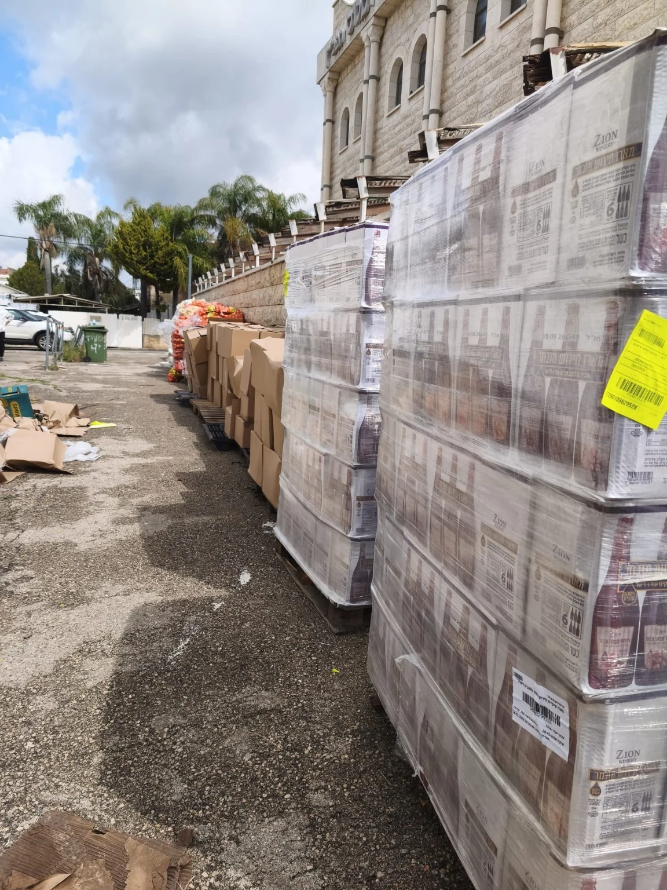

מוסדות ישימך כאפרים · דרכי יורם
בדרכו של הרב יורם אברג׳יל זיע״א
תורה, אמונה ואהבת ישראל לכל יהודי, בארץ ובעולם.

ישימך כאפרים · דרכי יורם
הכוללים, קופת החסד ופעילות הנוער בראש העין.
שותפים איתנו
סרטון חיזוק קצר ומחשבה לכל יום, עם הרב יורם אברג׳יל והרב יצחק חיים מעודה.
למסלול החיזוקבית של תורה ואהבת ישראל
חיזוק יומי · הרב יורם אברג׳יל
מסר על ההשגחה של ה׳ גם בפרטים הקטנים של היום.
לצפייה בחיזוקמחשבה לדרך · מערכת האתר
תורה שמדברת אל הלב
בית אחד. הרבה דרכים להתחבר.
מבית המדרש ועד הבית של השכן.
הכירו את הלב הפועם של המוסדות.
בגלריה ובהצגת הפעילות יש צילומים מקוריים. התמונות במדורי הקריאה נוצרו בבינה מלאכותית להמחשה.

קופת החסד ראש העין
סיוע במזון, בתלושים ובצורכי תינוקות,
בשבתות, בחגים ובמקרים דחופים.
כל שותפות מוסיפה כוח לעשייה.
קופת החסד ראש העין
בחרו תחום סיוע והכינו פנייה למזכירות לתיאום תרומה.


גלריית המוסדות
בחרו אלבום לצפייה בתמונות. בנייד אפשר להחליק בין התמונות.
מוסדות דרכי יורם · ראש העין
כל השעות, הכתובות ודרכי ההגעה במקום אחד.
המועדים עשויים להשתנות. אפשר לוודא את פרטי המפגש עם מזכירות המוסדות.
פינת השבת · לבית ולמשפחה
 תמונת המחשה
תמונת המחשהפותחים שיחה סביב השולחן
שלוש שאלות פשוטות שנותנות מקום לכל אחד מבני הבית.
לרעיונות לשולחן שבתמשהו קטן לקחת לשבת
בתוך ההכנות, משאירים רגע להקשבה, למילה טובה ולמי שנמצא לידנו.
לקריאהלפעמים סיפור אחד נשאר איתנו
 בחירת המערכת
בחירת המערכתלראות את האחר · סיפור מקורי להמחשה
הוא הגיע לשיעור בפעם הראשונה. מה שקרה ליד הכניסה גרם לו לרצות לחזור.

קרטון אחד בפתח הדלת הזכיר למתנדב צעיר מה באמת חשוב בנתינה.
כ־2 דקות קריאה
במקום לבקש מהילד לספר איך היה, אבא ביקש דבר אחד שונה.
כ־2 דקות קריאהאבות ובנים · גם בבית
הספר פתוח, הטלפון בצד והלב מקשיב.
קחו את החיבור של אבות ובנים אל תוך השבוע.
בוחרים רגע קטן בכל יום, עושים יחד ומסמנים.
הסימון נשמר בדפדפן הזה, לשימושכם האישי.הדרך שלנו
מוסדות ״ישימך כאפרים – דרכי יורם״ פועלים בראש העין בהנהגת הרב יצחק חיים מעודה שליט״א ובדרכו של מו״ר הרב יורם אברג׳יל זיע״א. הדרך שלנו מחברת אמונה וביטחון בה׳ עם הקשבה לנפש ואהבת ישראל: להתחזק מתוך תורה, לפגוש את החיים בלב מאמין, ולראות את הטוב שבכל יהודי. מן הלימוד בבית המדרש ועד העזרה למשפחה — האמונה מקבלת ביטוי במילה טובה ובמעשה של חסד.
כדאי לדעת
בשמחה. שיעורי החיזוק והפעילות הקהילתית הם הזדמנות להתחבר ולהכיר. כדאי לפנות למזכירות כדי לבחור את המסגרת המתאימה לכם.
לפי סדר הפעילות שנמסר, המפגש מתקיים במוצאי שבת בשעות 18:30–19:30. פרטי המפגש מופיעים בלוח הקהילה; לפני ההגעה יש לוודא שלא חל שינוי.
בחרו תחום באזור השותפות: החזקת התורה, סיוע למשפחות, ילדים ונוער או התנדבות. אפשר להכין פנייה אישית, להעתיק אותה ולשלוח למזכירות.
השיעורים ששמרתם וההתקדמות באתגר נשמרים בדפדפן במכשיר שלכם. אין צורך לפתוח חשבון נוסף. הסימונים אינם עוברים למכשירים אחרים, ומחיקת נתוני הדפדפן תמחק אותם.
מזכירות מוסדות ישימך כאפרים – דרכי יורם
לפרטים על שיעורים, נוער והצטרפות לפעילות אפשר לפנות ישירות לאמיר.
לחיוג לאמיר 052-500-0908